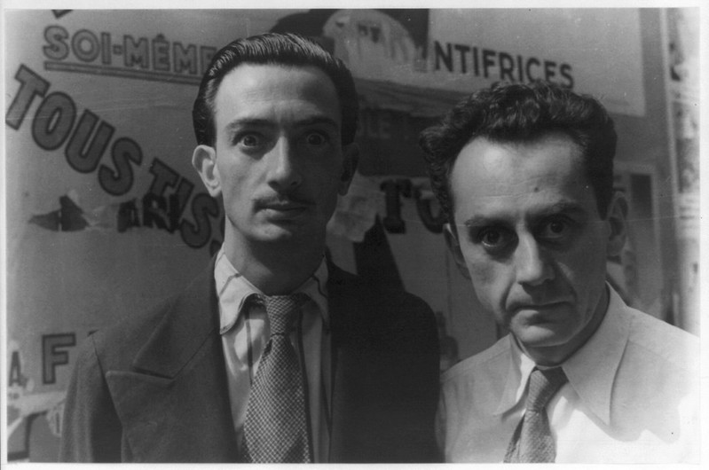

Artists
Salvador Dalí
Frida Kahlo
"At the end of the day, we can endure much more than we think".
Jean Michel Basquiat
Engineers
Tim-Burners Lee
 by Paul Hudson
by Paul Hudson
Linus Torvalds
"Talk is cheap, show me the code".
Hakon Wium Lie
Designers
David Carson
 by Stefan Hayden
by Stefan Hayden
Neville Brody
"Digital Design is like paining, except the paint never dries"
Susan Kare
Typographers
Matthew Carter
 by David Hollingsworth
by David Hollingsworth
Jan Tschischold
"My errors were more fertile than I ever imagined"